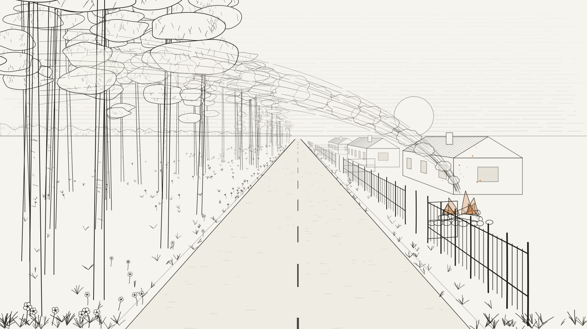

01 Belle Âme

Top
This is brilliant. It is iris and iris butter (both in texture and smell). It is so very smooth it is impressive. It has a calming sweetness (albeit I think it can be a little TOO sweet if you smell it by shoving your nose into the tester strip/skin. It is better smelled ambiently), and some spices somewhere there too. I can sense cardamom. There is also SOME trigeminal activation which I’d be inclined to think is due to incense (olibanum or frankincense).
This smells like it belongs in a museum. It feels like a smell that was separated from history, reformulated and achieved through modern standards of perfumery. It does have that old smell that sometimes comes with some Iris fragrances, but it could pass as eccentric too. It is polar in that way, such that I would never see anyone normal wearing this. It would either be a relatively young, interesting person who has like 4 creative hobbies, or a 70 year old grandma who has lived her life in luxury.
Just from the top, this is very much worth smelling. It is an incredible scent in all ways.
Mid
The middle is the above character but made sweeter, gentler and more kind. This is what the phrase “good night and sweet dreams” smells like.
Dry Down
The dry down introduces a cacao powderyness to the smell. Asides from that, it remains as impressive as in the top and mid.
02 Des Cendres

This perfume is my favourite from this house. I will explain it with a scenario
Picture yourself standing on a two lane road in a gated community in Europe. The area itself is more quiet and isolated, as you have houses on one side and a forest on the other. The very road you are standing on is near the village borders itself, and is considered by the locals to be the ante-chamber of the road between villages. The forest on your left is pine, probably more than one type (scots pine and ponderosa pine). You can smell it quite clearly. In the gated front yards on your right, there are preparations for what may be a summer evening barbeque, and so the logs are being burnt to start some fire. These logs are fresh and from some local source, and therefore contain some of that resinous character. As they burn, you can smell the combination of the logs and tar as well as the fresh and turpentine-y resins coming from the forest. That is what this smells like.

It contains traces of tar and galbanum. It also contains some mint that extends the greenness of the galbanum, being abrasive and dense, into the fresh and airy spectrum of green. It also contains some forest-y stuff, which I cannot identify. Imagine the flowers or the weeds that you might find at the edge of the aforementioned hypothesized road, it is their smell that I reference here. Maybe white florals if I were to wager a guess. It also has some leather, but not an aggressive dark leather, more so complimentary to the mint, making it fresher and more wearable. It also contains some hyraceum and oakmoss, which makes the forest notion all the more realistic.
I can also see this as being interpreted as something from a Haruki Murakami novel. There is a certain contemplative character to this fragrance that I feel would fit in wonderfully with a book like The City and its Uncertain Walls.
I love this fragrance, and I have wanted a bottle ever since I first smelled it. Eugen and Antoine lee, this is a masterpiece.
On the dry down, it is quite smoky, with traces of galbanum remaining, The scent profile is more or less the unchanged.
03 La Douleur Exquise

Top
I get amber, and Turkish rose. I think those are the two most pronounced facets. If you look past that, then you can get some resinous notes; such as oppoponax, frankincense and maybe olibanum. Its also spicy. I don’t know what spices there are, my best guess would probably go to pepper and something else.
Mid
The more this develops, the more trigeminal activation there is. In the top, it was virtually absent, but now im almost certain there is frankincense or something like that. The rose is still there, and will remain there until the end. It is mostly characteristic of a Turkish rose with how sweet it is.
Dry Down
Towards the dry down, it becomes softer, and less nuanced. I think at this stage it could be confused with the dry down of a classic rose-oud fragrance, although if you smell the spices of it and took note of the resins, you would probably realize that that is not the case.
Note: after looking at the ingredients list of this; it is genuinely impressive where they sourced their stuff from. Look at this:
Perfumes from Les Abstraits utilize ingredients from the Key Grand Cru natural ingredients palette from L'Atelier Français de Matières, including the following: The Patchouli comes from a specific terroir in Aceh, North Sumatra, and is distilled in modern, stainless steel equipment. The patchoulol content is 38%, resulting in an olfactive profile that is much cleaner and deeper, without any traces of a dirty or burnt undertones that one may smell in lower grade oils. The rose accord is composed of several rose oils and extracts of Bulgarian and Turkish origin. Sourced directly from the producers, they have mastered both the agricultural and extraction techniques necessary to guarantee the best ingredient quality. The dark side of La Douleur Exquise comes from an amber accord composed of cistus oil and labdanum extracts—both sourced from Spanish Andalucia. Together with natural castoreum and oppoponax resinoid, it provides the perfume’s gorgeously subtle animalic and smoky facets.
04 Philosopher’s Walk

First thing that comes to mind is a fougère. It starts off exactly as any other fougère would start: barbershop-y, masculine, fresh, aromatic with some lavender, etc. You get the profile, it is something you have smelled before.
What Philosopher’s Walk does differently though is that it smells like the highest quality version of a fougère I have smelled to date. I find it to be equivalent of pizza. You can go to Napoli, eat pizza at the very first pizzeria ever established and have it taste good. Unspectacular, but good. That is what a fougère is. Regardless of whether you try a fougère from the 20s, 50s, 90s, or the 21st century, it all smells more or less the same (with some nuances of course). But, you can also go to a Parisian gourmand restaurant with two Michelin stars that happens to serve pizza too. It will be the same recipe on paper, but it will taste different. You can tell that somehow it was made to be elevated. That would be Philosopher’s Walk. Though, unlike the pizza from our overpriced restaurant, I can assure you that philosopher’s walk is better than its well established cheap counterparts. So to put it simply; it is a recipe that was used before but done in a way that is so obviously drenched in quality that it ends up smelling elevated.
If I ever wanted to smell of a fougère, this really would be my #1 choice. It is a one-of-a-kind in a category so overdone and so overexplored that it amazes me that Eugen and Antoine Lie pulled off something this different.
It is also worth noting that the smell drastically changes from one person to another. As to why this is in a smell so very unrelated to musk is that the complexity increases when ingredients of this caliber are used. It is the same as comparing tonka beans and coumarin; where the latter is a lab synthesized molecule with one specific scent, whereas tonka beans themselves are multi-faceted and complex, being centered around coumarin but not limited to it. My logic is that with that complexity, each person’s skin will bring out some parts of this fragrance out more than others, so while the main character remains the same, the center stage note will differ from one person to another.